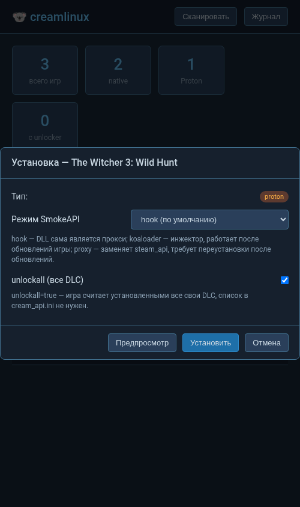

Разблокировка DLC в нативных Linux-играх Steam — обновлённый форк CreamAPI
Инструмент заставляет игру считать, что все DLC установлены. Файлы DLC должны лежать в папке игры — анлокер их не скачивает. Работает с нативными Linux-играми (Proton/Wine — через SmokeAPI, см. инструменты).
unlockall) — без списков ID1. Скачай релиз и распакуй в папку игры, либо запусти веб-интерфейс:
python3 tools/gui.py
2. В настройках запуска игры в Steam укажи:
sh ./cream.sh %command%
⚠️ Файлы DLC (например, папка dlc) нужны отдельно — анлокер не скачивает контент.
